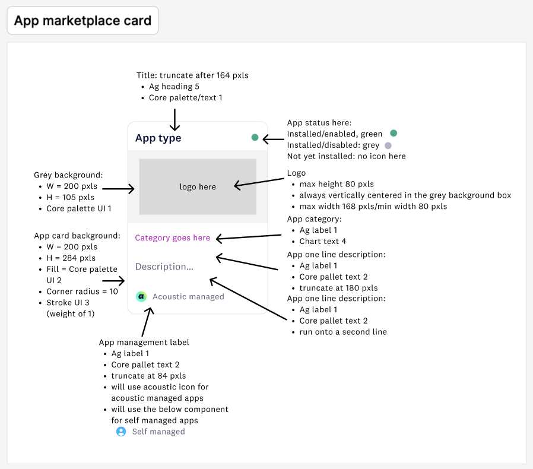
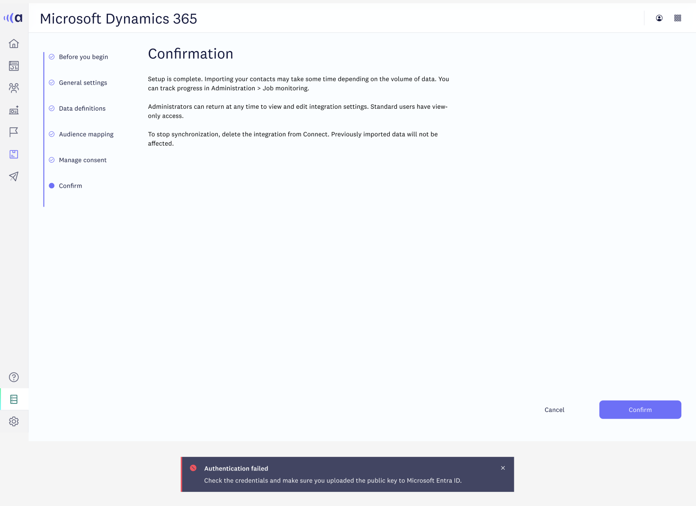
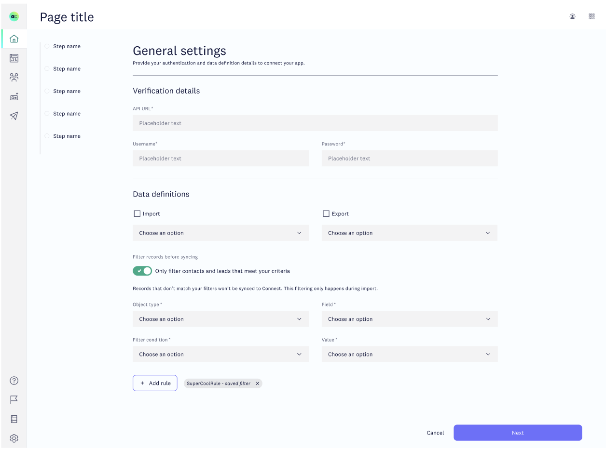

3rd-party integrations
Turning a complex catalog of 40+ connectors into a clear, guided, and reusable experience that reduced support tickets and became a sales asset.
Acoustic Connect is most powerful when it talks to the tools marketing teams already use: CRMs like Salesforce and SugarCRM, analytics platforms, cloud infrastructure like Snowflake and Azure, and e-commerce platforms like Shopify and Magento.
But for most customers, connecting those tools was intimidating. Setup could be complex, and every new integration required starting from scratch.
Over 10 weeks, I designed the end-to-end integrations experience: from how customers discover connectors to how they configure, manage, and reuse them across their organization.



Catalog cards · Guided confirmation · Configuration settings
A catalog that didn’t exist and integration templates waiting to be found
Acoustic Connect wanted to support integrations with 40+ tools across multiple categories. The setup flow needed configuration steps presented with context, error states that pointed to recovery quickly, a repeatable process for teams managing multiple integrations of the same type, and a way for users to tell at a glance which integrations were healthy.
We risked driving churn if we couldn’t get connectors up-and-running in a painless manner.
Turn integrations from a technical hurdle into a product strength
The connectors themselves were good. Google Analytics, Salesforce, Snowflake, Shopify. these were the tools Acoustic’s customers were already running their businesses on. The problem was entirely experiential and entirely solvable through design.
Solutions
Brand-first catalog
Customers find what they need easily. Recognizable logos and clear categories dramatically improved discovery time for non-technical buyers.
Guided configuration
Inline validation, progress indication, and integration-specific help. no pointless errors. Making implementation a week’s worth of work versus a month.
Health at a glance
Connection status visible in the catalog view. Customers know immediately which integrations need attention without opening each one.
Right expectations early
Acoustic-managed vs. self-managed labels on every card tell customers how much work is ahead before they start.
Reusable templates
Teams managing multiple integrations of the same type get a proven, repeatable process instead of starting from scratch every time.
Instead of: Alphabetical list → no context → complex setup → support ticket
Desired experience: Category browse → clear card → guided setup → connected and running
Integration-related churn avoided and a catalog that sells
The most important measure of this project wasn’t a design metric. it was a support ticket metric. Integration-related tickets were a leading indicator of customers who were about to churn. Reducing them meant keeping customers.
The integrations page also became a featured section in sales demos. A well-designed catalog of 40+ recognizable connectors turns out to be a compelling argument for platform breadth.
The problem was entirely experiential and entirely solvable through design. The biggest impact came from simplicity and predictability.